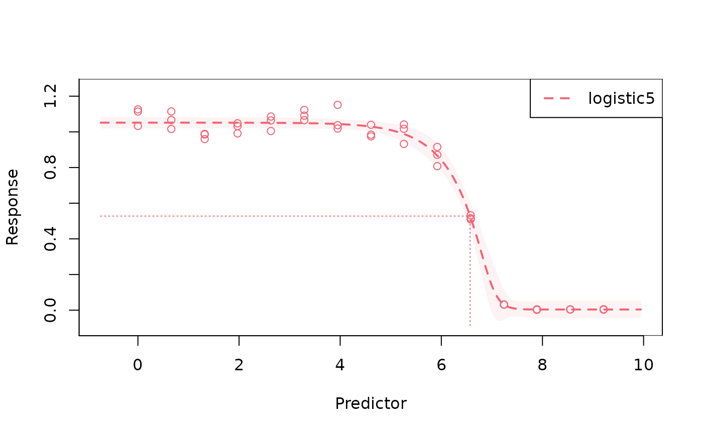
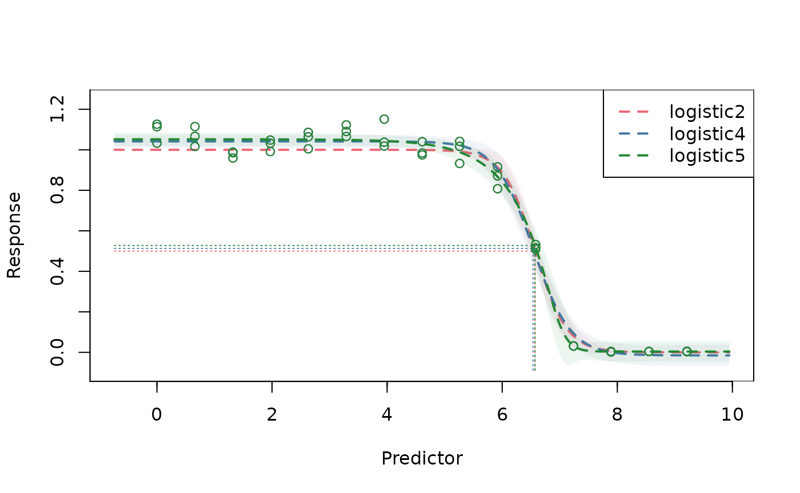
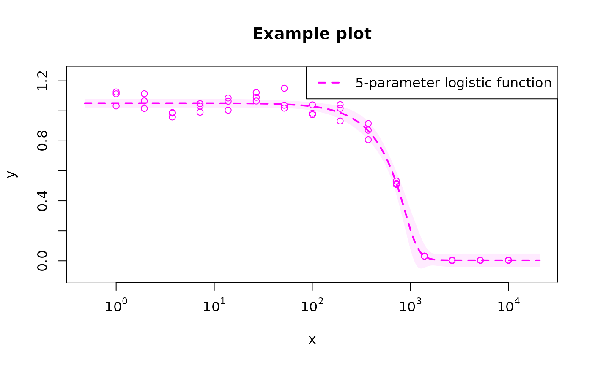

This file is to reproduce some drda results. drda is another R package for fitting dose-response curves, which includes additional Gompertz function. It was originally designed to fit nonlinear growth curves, using Newton’s with a trust-region method, which potentially is better in terms of optimization.
library(drcHelper)
#> Loading required package: drc
#> Loading required package: MASS
#>
#> 'drc' has been loaded.
#> Please cite R and 'drc' if used for a publication,
#> for references type 'citation()' and 'citation('drc')'.
#>
#> Attaching package: 'drc'
#> The following objects are masked from 'package:stats':
#>
#> gaussian, getInitial
## remotes::install_github("albertopessia/drda")
library(drda)Data
?voropm2
head(voropm2)
#> response dose log_dose weight
#> 1 1.1263 1.00 0.00 0.87
#> 2 1.0329 1.00 0.00 1.04
#> 3 1.1139 1.00 0.00 0.94
#> 4 1.1146 1.93 0.66 0.96
#> 5 1.0664 1.93 0.66 0.91
#> 6 1.0163 1.93 0.66 0.93Default Fitting
# by default `drda` uses a 4-parameter logistic function for model fitting
# common R API for fitting models
fit <- drda(response ~ log_dose, data = voropm2)
# get a general overview of the results
summary(fit)
#>
#> Call: drda(formula = response ~ log_dose, data = voropm2)
#>
#> Pearson Residuals:
#> Min 1Q Median 3Q Max
#> -1.88121 -0.72514 0.06395 0.47905 2.17210
#>
#> Parameters:
#> Estimate Std. Error Lower .95 Upper .95
#> Maximum 1.04147 0.01022 1.02144 1.061
#> Height -1.05659 0.02059 -1.09694 -1.016
#> Growth rate 3.07405 0.31744 2.45187 3.696
#> Midpoint at 6.53555 0.03593 6.46512 6.606
#> Residual std err. 0.05069 0.00574 0.03944 0.062
#>
#> Residual standard error on 41 degrees of freedom
#>
#> Log-likelihood: 72.432
#> AIC: -134.86
#> BIC: -125.83
#>
#> Optimization algorithm converged in 285 iterations
# get parameter estimates by using generic functions...
coef(fit)
#> alpha delta eta phi
#> 1.041465 -1.056586 3.074053 6.535548
sigma(fit)
#> [1] 0.05069196
# ... or accessing the variables directly
fit$coefficients
#> alpha delta eta phi
#> 1.041465 -1.056586 3.074053 6.535548
fit$sigma
#> [1] 0.05069196
# compare the estimated model against a flat horizontal line, or the full
# 5-parameter logistic model, using AIC, BIC, and the Likelihood Ratio Test
# (LRT)
#
# note that the LRT is testing the null hypothesis of a flat horizontal line
# being as a good fit as the chosen model, therefore we expect the test to be
# significant
#
# if the test is not significant, a horizontal line is probably a better model
anova(fit)
#> Analysis of Deviance Table
#>
#> Model 1: a
#> Model 2: a + d / (1 + exp(-e * (x - p))) (Fit)
#> Model 3: a + d / (1 + n * exp(-e * (x - p)))^(1 / n) (Full)
#>
#> Model 3 is the best model according to the Akaike Information Criterion.
#>
#> Resid. Df Resid. Dev Df AIC BIC Deviance LRT Pr(>Chi)
#> Model 1 44 9.0879 1 59.717 63.33
#> Model 2 41 0.1054 4 -134.864 -125.83 -8.9825 200.58 < 2.2e-16 ***
#> Model 3 40 0.0773 5 -146.774 -135.93 -0.0280 13.91 0.0001917 ***
#> ---
#> Signif. codes: 0 '***' 0.001 '**' 0.01 '*' 0.05 '.' 0.1 ' ' 1Other models
# use the `mean_function` argument to select a different model
fit_l2 <- drda(response ~ log_dose, data = voropm2, mean_function = "logistic2")
fit_l4 <- drda(response ~ log_dose, data = voropm2, mean_function = "logistic4")
fit_l5 <- drda(response ~ log_dose, data = voropm2, mean_function = "logistic5")
fit_gz <- drda(response ~ log_dose, data = voropm2, mean_function = "gompertz")
# which model should be chosen?
anova(fit_l2, fit_l4, fit_l5, fit_gz)
#> Analysis of Deviance Table
#>
#> Model 1: a
#> Model 2: 1 - 1 / (1 + exp(-e * (x - p)))
#> Model 3: a + d * exp(-exp(-e * (x - p)))
#> Model 4: a + d / (1 + exp(-e * (x - p)))
#> Model 5: a + d / (1 + n * exp(-e * (x - p)))^(1 / n) (Full)
#>
#> Model 5 is the best model according to the Akaike Information Criterion.
#>
#> Resid. Df Resid. Dev Df AIC BIC Deviance LRT Pr(>Chi)
#> Model 1 44 9.0879 59.717 63.33
#> Model 2 43 0.1493 1 -123.180 -117.76 -8.9386 184.897 < 2.2e-16 ***
#> Model 3 41 0.1438 2 -120.873 -111.84 -0.0055 1.692 0.4291117
#> Model 4 41 0.1054 0 -134.864 -125.83 -0.0384 13.991
#> Model 5 40 0.0773 1 -146.774 -135.93 -0.0280 13.910 0.0001917 ***
#> ---
#> Signif. codes: 0 '***' 0.001 '**' 0.01 '*' 0.05 '.' 0.1 ' ' 1
# 5-parameter logistic function provides the best fit (AIC and BIC are minimum)Weighted fit
# it is possible to give each observation its own weight
fit_weighted <- drda(response ~ log_dose, data = voropm2, weights = weight)
# all the commands shown so far are available for a weighted fit as wellConstrained optimization
# it is possible to fix parameter values by setting the `lower_bound` and
# `upper_bound` appropriately
#
# unconstrained parameters have a lower bound of `-Inf` and an upper bound of
# `Inf`
#
# Important: be careful when deciding the constraints, because the optimization
# problem might become very difficult to solve within a reasonable
# number of iterations.
#
# In this particular example we are:
# - fixing the alpha parameter to 1
# - fixing the delta parameter to -1
# - constraining the growth rate to be between 1 and 5
# - not constraining the `phi` parameter, i.e. the `log(EC50)`
lb <- c(1, -1, 1, -Inf)
ub <- c(1, -1, 5, Inf)
fit <- drda(
response ~ log_dose, data = voropm2, lower_bound = lb, upper_bound = ub,
max_iter = 260
)
summary(fit)
#>
#> Call: drda(formula = response ~ log_dose, data = voropm2, lower_bound = lb,
#> upper_bound = ub, max_iter = 260)
#>
#> Pearson Residuals:
#> Min 1Q Median 3Q Max
#> -1.76281 -0.14933 0.08862 0.81283 2.56716
#>
#> Parameters:
#> Estimate Std. Error Lower .95 Upper .95
#> Maximum 1.00000 NA NA NA
#> Height -1.00000 NA NA NA
#> Growth rate 3.58631 0.448736 2.70680 4.466
#> Midpoint at 6.57056 0.035336 6.50130 6.640
#> Residual std err. 0.05893 0.006432 0.04632 0.072
#>
#> Residual standard error on 43 degrees of freedom
#>
#> Log-likelihood: 64.584
#> AIC: -123.17
#> BIC: -117.75
#>
#> Optimization algorithm DID NOT converge in 260 iterations
# if the algorithm does not converge, we can try to increase the maximum number
# of iterations or provide our own starting point
fit <- drda(
response ~ log_dose, data = voropm2, lower_bound = lb, upper_bound = ub,
start = c(1, -1, 2.6, 5), max_iter = 10000
)
summary(fit)
#>
#> Call: drda(formula = response ~ log_dose, data = voropm2, lower_bound = lb,
#> upper_bound = ub, start = c(1, -1, 2.6, 5), max_iter = 10000)
#>
#> Pearson Residuals:
#> Min 1Q Median 3Q Max
#> -1.78762 -0.14935 0.08877 0.81294 2.56740
#>
#> Parameters:
#> Estimate Std. Error Lower .95 Upper .95
#> Maximum 1.00000 NA NA NA
#> Height -1.00000 NA NA NA
#> Growth rate 3.62475 0.464908 2.71355 4.536
#> Midpoint at 6.56865 0.035267 6.49953 6.638
#> Residual std err. 0.05892 0.006429 0.04632 0.072
#>
#> Residual standard error on 43 degrees of freedom
#>
#> Log-likelihood: 64.59
#> AIC: -123.18
#> BIC: -117.76
#>
#> Optimization algorithm converged in 284 iterationsPlotting
fit_l5 <- drda(response ~ log_dose, data = voropm2, mean_function = "logistic5")
# plot the data used for fitting, the maximum likelihood curve, and
# *approximate* confidence intervals for the curve
plot(fit_l5)
# combine all curves in the same plot
fit_l2 <- drda(response ~ log_dose, data = voropm2, mean_function = "logistic2")
fit_l4 <- drda(response ~ log_dose, data = voropm2, mean_function = "logistic4")
plot(fit_l2, fit_l4, fit_l5)
# modify default plotting options
# use `legend_show = FALSE` to remove the legend altogether
plot(
fit_l5, base = "10", col = "magenta", xlab = "x", ylab = "y", level = 0.9,
midpoint = FALSE, main = "Example plot", legend_location = "topright",
legend = "5-parameter logistic function"
)
References
Malyutina A, Tang J, Pessia A (2023). drda: An R package for dose-response data analysis using logistic functions. Journal of Statistical Software, 106(4), 1-26. doi:10.18637/jss.v106.i04